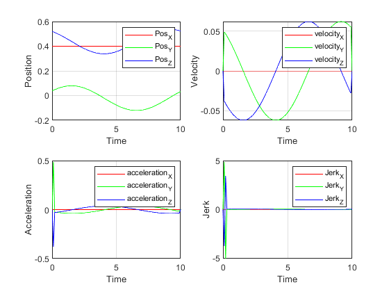

Contents
DH Parameter of Manipulator
abcd abcd
clear all; clc; close all; L (1) = Revolute('d',0.345 ,'a',0.02 ,'alpha',pi/2 ,'qlim',[-2.9671 2.9671], 'offset',0); L (2) = Revolute('d',0 ,'a',0.260 ,'alpha',0 ,'qlim',[-0.8727 2.9671], 'offset',0); L (3) = Revolute('d',0 ,'a',0.02 ,'alpha',pi/2 ,'qlim',[-2.7053 1.9198], 'offset',pi/2); L (4) = Revolute('d',0.260 ,'a',0 ,'alpha',(-pi/2) ,'qlim',[-3.0543 3.0543], 'offset',(-80*pi)/180); L (5) = Revolute('d',0 ,'a',0 ,'alpha',(pi/2) ,'qlim',[-2.0945 2.0945], 'offset',0); L (6) = Revolute('d',0.075 ,'a',0 ,'alpha',0 ,'qlim',[-6.1087 6.1087], 'offset',0); qz = [0 0 0 0 0 0]; %Home position where all thetas are zero KR3 = SerialLink(L,'name','KUKA KR3 Agilus'); KR3.manufacturer = 'JD & M'; KR3.ikineType = 'KR3';
Inputs
% Points = conversionP('Trianguler_Piramid.csv'); Points = conversionC('Circle.csv'); N = length(Points(1,:)); timeDuration = 10;%input("please input time to complete task in seconds : ");
Trajectory
tic [traj,T] = trajectory(Points,timeDuration);
Inverse Kinematics
for k = 1:N-1 for h = 1:length(T)-1
Des = traj(:,:,h,k);
if(h == 1 && k == 1)
Ini_val = geo_sol(Des);
elseif(h==1 && k~=1)
Ini_val = OPx(:,length(T)-1,k-1);
else
Ini_val = OPx(:,h-1,k);
end
Func = 1e-3;
Step = 1e-3;
% fprintf('\n Fsolve iterating for the %d(%d) position in the trajectory.\n',k,h);
options = optimoptions('fsolve','Display','off','Algorithm','levenberg-marquardt','FunValCheck','on','FunctionTolerance',Func,'StepTolerance',Step);
tempOpx(:,h,k) = fsolve(@ikine_Num,Ini_val,options,Des);
Checking Joint Limitation
OPx(:,h,k) = trimTheta(tempOpx(:,h,k),KR3);
Checking Singularities
Jacobian(:,:,h,k) = KR3.jacob0(OPx(:,h,k));
Determinant(h,k) = det(Jacobian(:,:,h,k));
if ((Determinant(h,k) <= 1e-4) && (Determinant(h,k) >= (-(1e-4))))
fprintf('\n Jacobian of the pose(%d(%d)).\n',k,h);
disp(Jacobian(:,:,h,k));
fprintf('\n Determinant of the pose(%d(%d)): %f\n',k,h,Determinant(h,k));
warning('Determinant of the pose is zero.It shows the singularity.')
end
Jacobian of the pose(65(1)).
0.1263 -0.4421 -0.2300 0.0163 0.0189 0
0.2994 0.1975 0.1027 0.0507 -0.0011 0
-0.0000 0.3049 0.1883 0.0035 -0.0726 0
0.0000 -0.4078 -0.4078 0.4671 0.3048 0.9186
0.0000 -0.9131 -0.9131 -0.2086 0.9502 -0.3113
1.0000 0.0000 0.0000 0.8592 0.0650 0.2432
Determinant of the pose(65(1)): 0.000060
Warning: Determinant of the pose is zero.It shows the
singularity.
end TimeStamp(:,k) = T+((k-1)*(timeDuration/(N-1))); end toc
Elapsed time is 19.277089 seconds.
Simulink Data Generation
th1 = reshape(OPx(1,:,:),[],1); th2 = reshape(OPx(2,:,:),[],1); th3 = reshape(OPx(3,:,:),[],1); th4 = reshape(OPx(4,:,:),[],1); th5 = reshape(OPx(5,:,:),[],1); th6 = reshape(OPx(6,:,:),[],1); Time = linspace(0,timeDuration,length(th1))'; Th1 = [Time th1]; Th2 = [Time th2]; Th3 = [Time th3]; Th4 = [Time th4]; Th5 = [Time th5]; Th6 = [Time th6]; DesX = [Time reshape(traj(1,4,:,:),[],1)]; DesY = [Time reshape(traj(2,4,:,:),[],1)]; DesZ = [Time reshape(traj(3,4,:,:),[],1)]; theta = [th1 th2 th3 th4 th5 th6]; wayPoints = [Points(1,:); Points(2,:); Points(3,:)]'; save theta1.mat Th1; save theta2.mat Th2; save theta3.mat Th3; save theta4.mat Th4; save theta5.mat Th5; save theta6.mat Th6; save DesiredX.mat DesX; save DesiredY.mat DesY; save DesiredZ.mat DesZ; save EulTh.mat theta;
Simulink Model
open_system('Simscape_Model_ver_3.slx');
Error using First_Final_Model (line 101)
Cannot load model '<a href="matlab:open_system ('Simscape_Model_ver_3')">Simscape_Model_ver_3</a>' with full path 'C:\Users\manav\MATLAB Drive\Quaternion\Final_Code\Eular_Simulink Model\Simscape_Model_ver_3.slx' because it has the same name as another model that is already loaded and has a different full path 'C:\Users\manav\MATLAB Drive\Quaternion\Simulink_Final_Model_Exception\Ver_3_3_with_Publish\Simscape_Model_ver_3.slx'. Either close the currently open model or rename one of the models and try again.
Error in evalmxdom>instrumentAndRun (line 109)
text = evalc(evalstr);
Error in evalmxdom (line 21)
[data,text,laste] = instrumentAndRun(file,cellBoundaries,imageDir,imagePrefix,options);
Error in publish
Error in mdbpublish (line 55)